指数与对数
什么是指数？
| 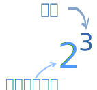 | 一个数的指数代表把多少个 例子： 23 = 2 × 2 × 2 = 8 （3个 2 乘在一起得到 8） |
什么是对数？
对数与指数相反。
它是这个问题的答案："什么指数会得到这个结果？"：
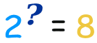
这问题的答案是：
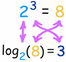
用以上的例子：
- 指数用 2 和 3 来得到 8 （2乘3次为8）
- 对数用 2 和 8 来得到 3 （2 成为 8，当把3个2乘在一起时）
对数的意思是： 用几个 数与自己乘在一起会得到另一个数
所以对数的答案是指数：
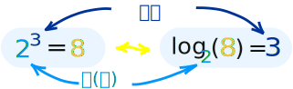
（去这里看看指数、根和对数的关系。）一起用
指数与对数时常用在一起，因为它们的效果是"相反"的（但底"a"要相同）：
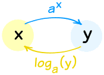
指数与对数互为"反函数"
先做一个，然后做另一个，就还原了：
- 取 ax，然后取对数，得回 x: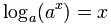
- 取对数，然后取 ax，得回 x：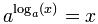
但光看名字不能猜到它们是相反的……
你可以这样想：ax "向上"，loga(x) "向下"：
- 向上走，然后向下走，你回到原处：向下(向上p(x)) = x，
- 向下走，然后向上走，你回到原处：向上(向下(x)) = x
无论如何，重点是：
指数函数可以"还原"对数函数的效果。.
（反过来也一样）
看这个例子：
举例： log3(x) = 5，x 是什么？
我们可以用以3为底的指数来"还原"对数：
| 开始 | 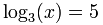 | |
| 我们想"还原"对数以得到 "x =" | ||
| 每边都用指数函数： | 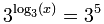 | |
| 我们知道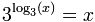，所以： | x = 35 | |
| 答案： | x = 243 | |
再来一个：
例子：y=log4(1/4)，求 y
| 开始 | 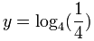 | |
| 每边都用指数函数： | 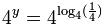 | |
| 简化： | 4y = 1/4 | |
小窍门：1/4 = 4-1 |
||
| 所以： | 4y = 4-1 | |
| 故此： | y = -1 | |
对数的特性
对数的其中一个强大功能是把乘变成加。
loga( m × n ) = logam + logan
"乘的对数是对数的和"
为什么是这样？看附注。
用这特性和指数定律，我们得到以下有用的特性：
| loga(m × n) = logam + logan | 乘的对数是对数的和 |
| loga(m/n) = logam - logan | 除乘的对数是对数的差 |
| loga(1/n) = -logan | 这是以上"除"特性的结果，因为 loga(1) = 0 |
| loga(mr) = r ( logam ) | m的r次幂 的对数 是 r 和 m的对数 的积 |
记着：底 "a" 一定要相同！
历史： 以前没有计算器时，对数非常有用……例如，要乘两个很大的数，你可以用对数来把乘变为加（容易得多！）
以前甚至有专门为此而设的对数表书。
我们来玩玩：
例子：简化 loga( (x2+1)4√x )
| 开始： | loga( (x2+1)4√x ) | |
| 用 loga(mn) = logam + logan： | loga( (x2+1)4 ) + loga( √x ) | |
| 用 loga(mr) = r ( logam ) : | 4 loga(x2+1) + loga( √x ) | |
| 同时 √x = x½ : | 4 loga(x2+1) + loga( x½ ) | |
| 再用 loga(mr) = r ( logam ) ： | 4 loga(x2+1) + ½ loga(x) |
不能再简化下去了……不能简化这个：loga(x2+1).
答案：4 loga(x2+1) + ½ loga(x)
注意：没有处理 loga(m+n) 或 loga(m−n)的规则
我们也可以"反过来"用对数的特性来组合对数：
例子：把loga(5) + loga(x) − loga(2) 变成一个对数：
| 开始： | loga(5) + loga(x) − loga(2) | |
| 用 loga(mn) = logam + logan : | loga(5x) − loga(2) | |
| 用 loga(m/n) = logam − logan : | loga(5x/2) |
答案：loga(5x/2)
自然对数和自然指数函数
底是e（"欧拉数" = 2.718281828459……）的对数叫：
- 自然对数 loge(x)
通常写为 ln(x)
- 自然指数函数 ex
它们仍然可以互相还原：
ln(ex) = x
e(ln x) = x
这是它们的图：
自然对数 |
自然指数函数 |
|
| 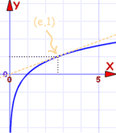 | 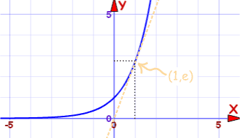 | |
| f(x) = ln(x)的图 | f(x) = ex的图 |
|
穿过 (1,0) 和 (e,1) |
穿过 (0,1) 和 (1,e) |
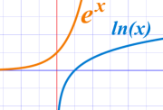
它们是同一条曲线，不过x轴 和 y轴 对调了。
这也显示出它们是反函数。
| 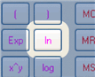 | 在计算器上，自然对数是 "ln" 键。 |
你应该尽量使用自然对数和自然指数函数。
常用对数
底是10的对数叫：
- 常用对数 log10(x)，有时写为 log(x)
工程师时常用到它，但数学里很少用。
在计算器上，常用对数是 "log" 键。 它的有用之处是告诉你数在十进制里 "有多大"（你要乘几个10）。 |
例子：计算 log10 100
10 × 10 = 100，所以2个 10乘在一起的积是 100：
log10 100 = 2
同样， log10 1,000 = 3，log10 10,000 = 4，依此类推。
例子：计算 log10 369
这个最好用计算器的 "log" 键：
log10 369 = 2.567……
改变底
如果我们想改变对数的底呢？
容易！用这个公式：
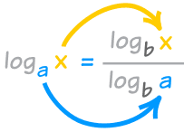
"x 增大，a 减小"
你也可以把 logb a 作为 "转换因数"（公式如上）：
loga x = logb x / logb a
用这个公式，我们可以转换为任何的底。
另一个有用的特性是：
loga x = 1 / logx a
看到 "x" 和 "a" 换位吗？
例子：计算 1 / log8 2
1 / log8 2 = log2 8
2 × 2 × 2 = 8，所以3个 2乘在一起的积是 8：
1 / log8 2 = log2 8 = 3
我们常用自然对数，所以最好记着：
loga x = ln x / ln a
例子：计算 log4 22
我的计算器没有 "log4" 键…… ……但它有 "ln" 键。我们来用它： |
log4 22 = ln 22 / ln 4 = 3.09.../1.39... = 2.23 （保留三位小数）
这答案的意思是什么？它的意思是 4的2.23次幂等于22。我们来检测：
检测：42.23 = 22.01（差不多了！）
再来一个例子：
例子：计算 log5 125
log5 125 = ln 125 / ln 5 = 4.83.../1.61... = 3 （绝对精确）
我知道 5 × 5 × 5 = 125（3个 5 的积是 125），所以答案应该是 3。对了！
现实应用
在现实世界里应用对数的实例：
地震
地震的振幅是以对数尺度显示。
著名的"里氏地震规模"用这个公式：
M = log10 A + B
其中： A 是地震仪测量的振幅（单位为毫米）
B 是距离校正系数
现今有更复杂的公式，但都是用对数尺度。
声音
响度的单位是分贝（简写为dB）：
响度（dB） = 10 log10 (p × 1012)
其中 p 是声压
酸性的或碱性的
酸性（或碱性）的测量单位是 pH：
pH = −log10 [H+]
其中 H+ 是溶解的氢离子的摩尔浓度。
注意：在化学， [ ] 代表摩尔浓度（克／升）。
更多例子
例子：解 2 log8 x = log8 16
| 开始： | 2 log8 x = log8 16 | |
| 把 "2" 带进对数：: | log8 x2 = log8 16 | |
| 拿走对数（对数的底相同）： | x2 = 16 | |
| 解： | x = −4 or +4 | |
可是……可是……可是……不能有负数的对数！
所以 −4 的解是未定义的
答案：4
检验：用计算器来检验……也用 "-4"来试试看。
例子：解 e−w = e2w+6
| 开始： | e−w = e2w+6 | |
| 每边取 ln： | ln(e−w) = ln(e2w+6) | |
| ln(ew)=w： | −w = 2w+6 | |
| 简化： | −3w = 6 | |
| 解： | w = 6/−3 = −2 | |
答案：w = −2
检验：e−(−2)= e2 and e2(−2)+6=e2
附注：为什么 log(m × n) = log(m) + log(n)？
要知道为什么，我们需要用 and :
| 首先把 m 和 n 变成 "对数的指数"： | |
| 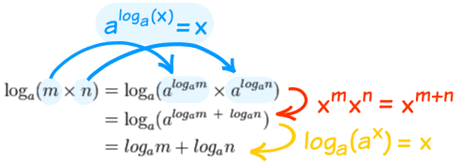 |
然后用指数定律 最后把指数还原。 |
这是数学里时常用到的"高招"："这里做不行，我们就去那边做，然转换回来"